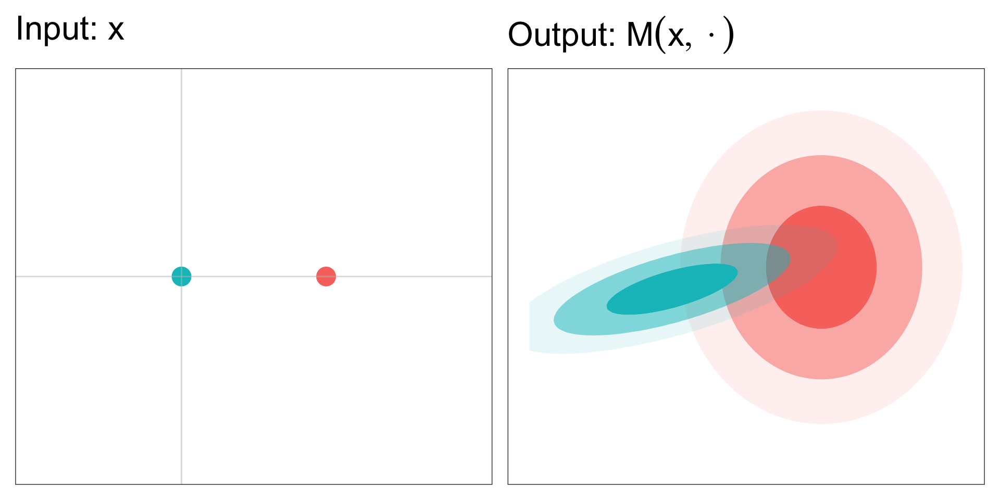

Persuasive Privacy
ISBA Satellite Meeting, 5th July 2026
Adelaide University*
Today’s talk1
- Differential privacy
- DP and MCMC
- Persuasive privacy2
- A game-theoretic justification
- Private discussion

A Game of Privacy
True or False?
I’ve met a sumo wrestler.
Differential privacy
Private mechanisms?
\text{Dataset}~x \overset{\text{release}}{\longrightarrow} \text{statistic}~T
- T \sim M(x,\cdot), with some mechanism M
Example
- T = \frac{1}{n}\sum_{i=1}^{n} x_i + Z with Z \sim \mathcal{N}(0,\sigma^2)
M(x,\cdot) = \mathcal{N}(\overline{x},\sigma^2)
DP Intuition

To limit information leaked about data x by statistic T,
control the sensitivity of the mechanism M(x,\cdot) w.r.t. x.
DP Definition
Borrow from Lipschitz continuity (Bailie et al., 2024).
d_\text{P}[M(x,\cdot),M(x^\prime,\cdot)] \leq \epsilon~d_\text{X}[x,x^\prime]
for all x,x^\prime \in \mathcal{D}.
DP Definition
A mechanism M is \epsilon-DP if
\sup_{S\in\mathcal{S}}\left\vert\ln\frac{M(x,S)}{M(x^\prime,S)}\right\vert \leq \epsilon
for all x,x^\prime \in \mathcal{D}, differing by at most one element.
Pure Differential Privacy
M(x,S) \leq \exp\{\epsilon\} M(x^\prime, S) for all x \sim x^\prime and S \in \mathcal{S}.
Some DP Properties
Focusing on (pure) \epsilon-DP.
- Composition: If M_1 and M_2 are \epsilon-DP then
M_1 \otimes M_2 ~\text{is}~ 2\epsilon\text{-DP}
- Post-processing: If K is independent of the data then
M_1 K ~\text{is}~ \epsilon\text{-DP}
Some DP Properties
Focusing on \epsilon-DP. Examples:
- Composition:
If releasing the mean and variance of a dataset are each \epsilon-DP, then the joint release is 2\epsilon-DP.
- Post-processing:
If M constructs a histogram that is \epsilon-DP, then any quantile from the histogram will also be \epsilon-DP.
Variants of DP
There are many variants and relaxations of DP.
- Probabilistic DP (Guingona et al., 2023)
\inf_{x\sim x^\prime}\mathbb{P}_{x}\left[ m(x,T) \leq \exp\{\epsilon\} m(x^\prime, T) \right] \geq 1 - \delta
- Approximate DP (Dwork, Kenthapadi, et al., 2006)
M(x,S) \leq \exp\{\epsilon\} M(x^\prime, S) + \delta for all S \in \mathcal{S}.
Variants of DP
There are many variants and relaxations of DP.
- Rényi DP
- Gaussian DP
- Concentrated DP
- Many more!
Related to Lipschitz interpretation
Pure DP Semantics
- Hypothesis testing
- Type I & II error controlled by \epsilon (Wasserman et al., 2010)
- Bayesian evidence
- Prior-to-posterior or posterior-to-posterior ratio controlled (Dwork, McSherry, et al., 2006; Kasiviswanathan et al., 2014)
- Game theory
- Controls expected utility (Zhang et al., 2021)
Semantics are post hoc!
DP and MCMC
Private MCMC
Want to privately sample from \pi(\theta\mid T) using MCMC
Via post-processing
- Determine DP guarantee for T^\prime = \frac{1}{n}\sum_{i=1}^n T(y_i) + \varepsilon
- Sample from approximate target \pi(\theta\mid T = T^\prime)
DP and MCMC
Private MCMC
Want to privately sample from \pi(\theta\mid T) using MCMC
Via post-processing
Or some “exact” alternatives:
Sample from noisy-ABC posterior (Fearnhead et al., 2012)
Target posterior of new summary statistic: noisy-ABC + Insufficient Gibbs (Luciano et al., 2024)
Statistical efficiency loss and no extra privacy from sampling
DP and MCMC
Via composition
If M is \pi-invariant MCMC kernel
- Establish DP for one sample from M
- Use (advanced) composition property for N samples
- But privacy degrades in \mathcal{O}(N) or \mathcal{O}(\sqrt{N})
Antithetical to monitoring convergence and prohibits large N
Non-exact alternative: Generalised Bayes (Jewson et al., 2023)
Limitations of DP
- DP Semantics are post-hoc explanations
- DP for MCMC is c o o k e d
- Deterministic mechanisms are not covered by DP
Limitations of DP
Our approach is a semantics first understanding of data privacy, where
- Privacy definitions are systematically constructed from an agent-based game
- Game assumptions have real-world interpretations
- Privacy easier to interpret, communicate and tailor
What else is in the paper?
- Probabilistic and pure DP special cases
- Rényi and f-divergence DP also by changing assumptions
- Privacy developed for deterministic mechanisms:
- empirical mean
- cell suppression
Persuasive Privacy
The players
Sender
Government agency release small area statistics on a disease
Receiver
Insurance company raises premiums using inferred disease prevalence in a small town
Effect on data privacy
Statistic release \longrightarrow adversarial decisions \longrightarrow privacy effect
Privacy game
Private data: Sender’s sensitive data, held privately and never shared.
x \in \mathsf{X}
Mechanism: A (deterministic or randomised) mechanism.
M: (\mathsf{X}, \mathcal{T}) \rightarrow [0,1]
Markov kernel w.r.t. measurable space (\mathsf{T}, \mathcal{T}).
Statistic: Generated from mechanism and shared with Receiver.
T \sim M(x, \cdot)
Privacy guarantee: Shared with Receiver for transparency.
Assumption 1 Definition \mathfrak{C} does not depend on M nor x.
Privacy function: The realised privacy is
\rho(d^{Q_T},x)
Data-prior Q the receiver’s assumed prior over the data.
Q \in \mathcal{P}(\mathsf{X})
Data-posterior. Receiver’s posterior given the release of T.
Q_T = Q(\,\cdot \mid T,M,\mathfrak{C}) = Q(\,\cdot \mid T,M)
Receiver decision: d, formed by posterior Q_T and loss \ell.
d^{Q_T} \in \arg\inf_{d \in \mathcal{D}} \mathbb{E}_{z \sim Q_T}[ \ell(d,z)]
Receiver loss: Receiver’s loss function.
Assumption 3 \qquad \ell = \rho
Sender: Holds x and chooses M to persuade Receiver.
Assumption 4 & 5: Sender considers M private if
\mathbb{P}_x\left[\Delta(Q,T,x) \leq \kappa \right] \geq 1 - \delta
holds uniformly for all data-priors Q \in \mathcal{Q}_x \subset \mathcal{P}(\mathsf{X}) and datasets x \in \mathsf{X}.
Receiver: Holds prior Q over (unknown) data x.
Assumption 2: Receiver is a Bayesian agent.
A privacy definition
Definition: Persuasive Privacy
We say M is (\mathcal{Q}_x, S, \kappa, \delta)-PP if
\inf_{x\in\mathsf{X}}\inf_{Q\in\mathcal{Q}_x}\mathbb{P}_x\left[S(Q, x) - S(Q_{T}, x) \leq \kappa \right] \geq 1 - \delta,
where \mathbb{P}_x is w.r.t. T \sim M(x,\cdot).
- Maximum allowable privacy change: \kappa
- Maximum probability of leakage: \delta\quad
Game-theoretic privacy
An anatomy of data privacy
The players
Sender
- Custodian of data
- Releases some statistic T \sim M(x,\cdot)
- Chooses mechanism M
Receiver
- Makes decision based on T
- Decision affects Sender’s privacy
Privacy function
Sender’s privacy measured with a privacy function
\rho:\mathcal{D} \times \mathsf{X} \rightarrow \mathbb{R}
Receiver’s decision \quad d_i \in \mathcal{D}
Data value \quad x \in \mathsf{X}
\rho orders preferences of decisions for a given dataset
- If d_1 is preferred to d_2 then \rho(d_1,x) > \rho(d_2,x)
Example 1: Privacy function
For some fixed \kappa>0,
\rho(d,x) = \begin{cases} 0, & \text{if } x \in d, \vert d \vert < \kappa\\ 1, & \text{otherwise}, \end{cases}
x \in \mathsf{X} = \mathbb{R}
d \in \mathcal{D} = \{[a,b]:a,b\in \mathbb{R}, a\leq b\}
Example 2: Privacy function
\rho(d,x) = -\log d(x)
x \in \mathsf{X} = \mathbb{R}
d \in \mathcal{D} = \{\text{probability density functions on } \mathbb{R}\}
The statistic
A statistic T \in \mathsf{T} is output from a mechanism M given x
T \sim M(x,\cdot)
- M:\mathcal{T} \times \mathsf{X} \rightarrow [0,1] for (\mathsf{T},\mathcal{T}) measurable space
The statistic
M can be deterministic or randomised
- Summary statistics \quad\tau:\mathsf{X}\rightarrow\mathsf{T}
- M(x,\cdot) = \delta_{\tau(x)}(\cdot)
- Noisy summary statistics
- M(x,\cdot) = \mathcal{N}(~\cdot \mid \tau(x), \sigma^2)
- Composition of multiple mechanisms
The statistic
M can be deterministic or randomised
- Result of optimisation
- MLE: \quad M(x,\cdot) = \delta_{\tau(x)}(\cdot)
- \tau(x) = \arg\max_{\theta \in \Theta} \log L(x \mid \theta)
- Monte Carlo output
- MCMC: \quad M(x,\mathrm{d}t_{1:N}) = \prod_{i=1}^N K(\mathrm{d}t_{i} \mid t_{i-1}, x)
- Noisy optimisation
- SGD: \quad M(x,\mathrm{d}t_N) = \int_{\mathsf{T}_{-n}}\prod_{i=1}^N K(\mathrm{d}t_{i} \mid t_{i-1}, x)
Transparency
Privacy class: A set of mechanisms that satisfy a given privacy definition.
If \mathfrak{C} is the privacy class generated by “\text{D}” then
M \in \mathfrak{C} \Longleftrightarrow M~\text{satisfies}~\text{D}
Assumption 1: Transparency
Sender shares the mechanism M and privacy class \mathfrak{C}, for which M \in \mathfrak{C}, with Receiver. Further, the definitions of M and \mathfrak{C} do not depend on the data.
Receiver
Assumption 2: Bayesian adversary
Receiver is Bayes rational
- Holds a prior distribution over the data Q
- Constructs a posterior distribution Q_T from (M,T)
- Has loss function \ell: \mathcal{D} \times \mathsf{X} \rightarrow \mathbb{R}
Sharing \mathfrak{C} does not affect Receiver’s data posterior by Assumption 1.
Receiver’s optimal decision
From Assumption 1:
Receiver’s optimal decision
d^{P} \in \arg\inf_{d \in \mathcal{D}} \mathbb{E}_{z \sim P}[ \ell(d,z)] under belief P \in \{Q,Q_T\}
To model Receiver’s decision:
We need assumptions on Q and \ell
Receiver model
Assumption 3: Adversarial loss function
Receiver has loss function \ell(d,x) = \rho(d,x)
- Interpretation 1: Receiver targets privacy
If d^P_{\ell^\prime} is Receiver’s optimal decision under (P,\ell^\prime) then
\mathbb{E}_{x \sim P}[ \rho(d^{P}_\rho,x)] \leq \mathbb{E}_{x \sim P}[ \rho(d^P_{\ell^\prime},x)]
- Interpretation 2: data-averaged worst-case for Sender
Realised privacy outcome
Let S: \mathcal{P} \times \mathsf{X} \rightarrow \mathbb{R} such that
S(P,x) = \rho(d^{P},x)
- If \ell = \rho, the realised privacy value is a (negatively-orientated) proper scoring rule1
- A privacy score
Privacy scores
- We continue with privacy scores (equivalence)
- Use known proper scoring rules to measure privacy outcome
- Create new proper scoring rules from \rho
- For example when d is a PDF/PMF:
\rho(d,x) = -\log d(x) then S(Q_T,x)=-\log q_T(x).
Without loss of generality, we focus on proper scoring rules.
Measuring privacy
Relative privacy \Delta(Q,T,x) = S(Q,x) - S(Q_T,x)
Assumption 4
For a given Q and x, Sender considers a mechanism M private only if
\mathbb{P}_x\left[\Delta(Q,T,x) \leq \kappa \right] \geq 1 - \delta,
- Maximum acceptable privacy loss \kappa \geq 0
- Small probability of failure 0 \leq \delta \ll 1
- Probability \mathbb{P}_x is w.r.t. M(x,\cdot)
Sender is robust
To be robust, sender should assess
- “Realistic” data-priors Q
- All x \in \mathsf{X} (also required by Assumption 1)
Assumption 5
Sender considers M private if
\mathbb{P}_x\left[\Delta(Q,T,x) \leq \kappa \right] \geq 1 - \delta
holds uniformly for all data-priors Q \in \mathcal{Q}_x \subset \mathcal{P}(\mathsf{X}) and datasets x \in \mathsf{X}.
Persuasive privacy
A privacy definition
Definition: Persuasive Privacy
We say M is (\mathcal{Q}_x, S, \kappa, \delta)-PP if
\inf_{x\in\mathsf{X}}\inf_{Q\in\mathcal{Q}_x}\mathbb{P}_x\left[\Delta(Q,T, x) \leq \kappa \right] \geq 1 - \delta,
where \mathbb{P}_x is w.r.t. T \sim M(x,\cdot).
- Change in privacy: \Delta(Q,T, x) = S(Q, x) - S(Q_{T}, x)
- Maximum allowable privacy change: \kappa
- Maximum probability of leakage: \delta\quad
Why “persuasive”?
Sender chooses a mechanism that persuades Receiver to make decisions limiting privacy loss.
Related to Bayesian persuasion1 but…
- asymmetry between Sender and Receiver
- utility functions of Sender and Receiver are related
- Sender assesses decisions (mechanism) robustly: worst-case not expected value
Properties of Persuasive Privacy
Composition M_i \in \mathfrak{C} \Rightarrow M_1 \otimes M_2 \in \mathfrak{C}^\prime
Receiver post-processing M \in \mathfrak{C} \Rightarrow M \otimes K \in \mathfrak{C}
Does not satisfy (Sender) post-processing M \in \mathfrak{C} \Rightarrow M K \in \mathfrak{C}
Returning to DP
Recall the Persuasive Privacy elements (\mathcal{Q}_x, S, \kappa, \delta), and consider
- Family of alternative hypothesis priors
\mathcal{H}_x = \{ Q \in \mathcal P_2:x^\prime \sim x, Q(\{ x , x^\prime \})= 1 \}
- Log-probability scoring rule
S(P,x) = -\log p(x)
Returning to DP
Alternative hypothesis prior class and log-probability score recover PrDP as instance of Persuasive Privacy
\inf_{x\sim x^\prime}\mathbb{P}_{x}\left[ m(x,T) \leq \exp\{\epsilon\} m(x^\prime, T) \right] \geq 1 - \delta
- Pure DP is a special case (\delta = 0)
- PrDP implies Approximate DP
Returning to DP
- Pure, Probabilistic, and approximate DP are notions of privacy relative to change in Receiver’s knowledge
- Can be derived by considering persuasive privacy game
- ADP satisfies (Sender) post-processing property
- PrDP does not (unless pure DP)
- Typically a criticism of PrDP
- PrDP does have (Receiver) post-processing property
- A simple fix: control Receiver’s decision by including pre-processed statistic
Privacy for deterministic mechanisms
- DP can’t be defined for deterministic mechanisms
- Persuasive privacy framework flexible enough
- Demonstrate privacy for mean \bar x
M(x,\cdot) = \delta_{\bar x}(\cdot)
Privacy for deterministic mechanisms
Use class of Gaussian distributions
\mathcal{G}_{x}^{r} = \left\{ \mathcal{N}(\mu,\Sigma): \frac{(\bar{x}-\bar{\mu})^2}{\overline{\Sigma}} \leq r_1 , c_\Phi \leq r_2 \left(1- \frac{\sigma_i^2}{\Vert\sigma \Vert_2^2} \right) \right\}
for r_1 > 0 and r_2 > 1.
- Data posterior after observing \bar x is multivariate normal but degenerate
- Support only on subspace \{z\in \mathbb{R}^n: \bar z = \bar x\}
Privacy for deterministic mechanisms
Use (marginal) Dawid–Sebastiani Score
D_i(Q,x) = \log \sigma^2_i(Q) + \frac{[x_i - \mu_i(Q)]^2}{\sigma^{2}_i(Q)}
for each element of data, and consider the worst-case element for privacy.
Privacy for deterministic mechanisms
Proposition
The average mechanism M(x,\cdot) = \delta_{\bar{x}} satisfies (\mathcal{I},\mathcal{G}_{x}^{r},r_1+ \log r_2,0)-PP.
- Possible to have a rigorous guarantee for a deterministic mechanism
- Opens path for privacy guarantees for convergent iterative algorithms
- e.g. MCMC without privacy perturbations (posterior summary statistics)
- A “decomposition rule”
Summary
- Framework for purpose-driven privacy definitions (rigorously justified)
- All assumptions stated, anatomy used as backbone
- Assessment of existing privacy guarantees with game theory
- New interpretations of post-processing property
- Easy fix for PrDP post-processing
- Established that privacy guarantees possible for deterministic algorithms
An invitation to (Bayesian) privacy
- Q \in \mathcal{Q}_x BNP
- M(x,\cdot) BayesComp
- S(P,x) BayesComp, Applied Bayes
Thank you!

Appendix
Ongoing work
Short term
Decomposition rule (for deterministic mechanisms)
- Use noise in MCMC as additional privacy
Nonparametric prior families
Independent Commissioner Against Corruption (SA)
Medium term
Privacy-utility trade-off
Computation (SMC, SBI) versus privacy approximation trade-off